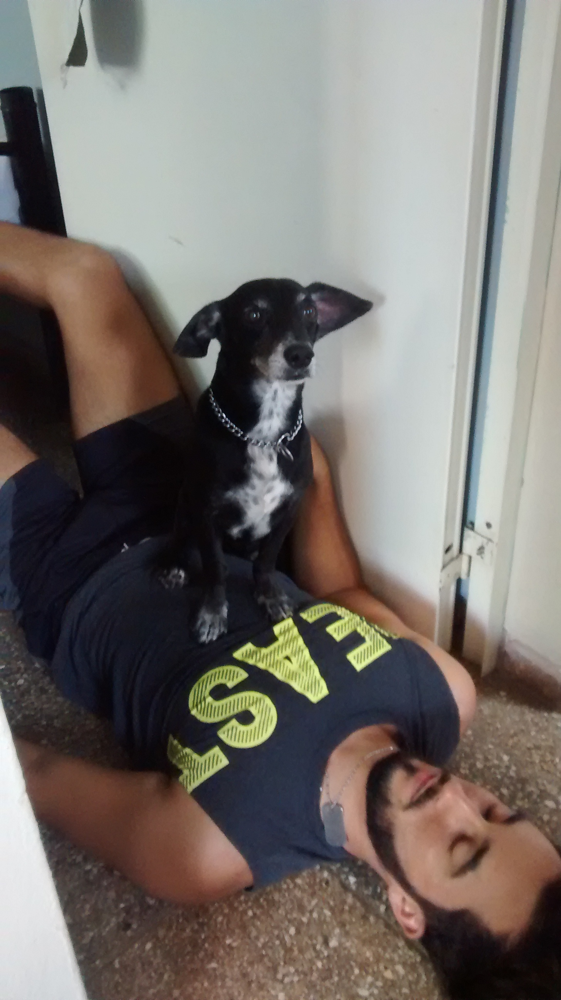
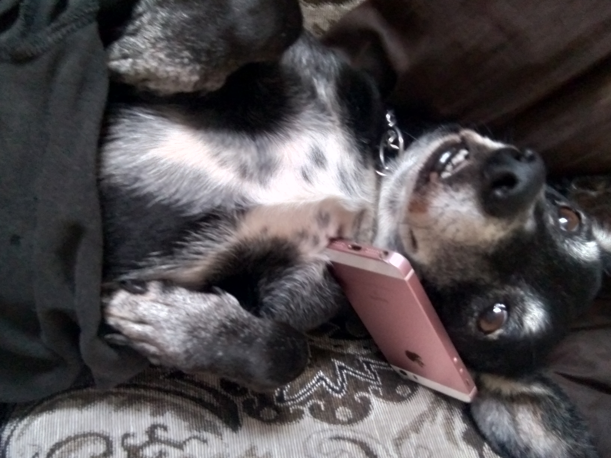
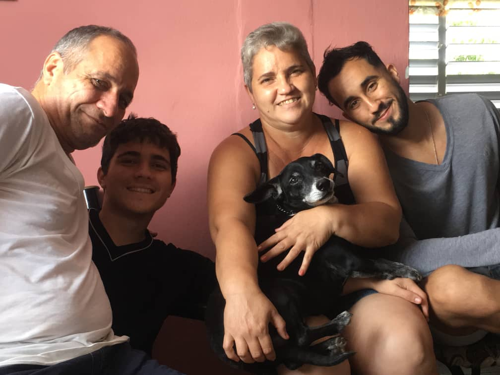

La vida de Pancho

Una tarde que el padre de la familia no se encontraba en casa, apareció de imprevisto un curioso ladrón , llevaba traje negro , ojos marrones y una elegante corbata blanca , dicen los que cuentan que este peculiar persojane apareció de repente en una familia que estaba ansiando una mascota desde hacía largo rato. Los integrantes de esta familia no estaban al tanto de las características cleptomanas de este animal , así que lo acogieron en su hogar y lo nombraron Pancho .

Poco a poco dicho animal de alargada forma y cortas extremidades se fue apropiando de cada lugar de la casa , y no pensaba detenerse hasta que no hubiese conquistado todo en ella , fue formando parte de la familia por su noble carácter y su mirada llena de inocencia , y los García Pérez lo aceptaron como uno más de ellos
Adoptó ciertas costumbres que a simple vista se veían tiernas , pero en el fondo , su plan seguía en pie ( Era robar , robar y robar todo lo que pudiera ) , en su trayecto por este hogar conoció otras criaturas de su especie , incluso llegó a encariñarse con algunas

Un día llamó a sus secuaces para informar sobre su misión , el plan iba a toda marcha , poco a poco se estaba haciendo dueño de cada persona de ese lugar , tenía la ateción que siempre quiso , la familia que siempre quiso , las comodidades que siempre quiso , se sentía en un HOGAR
Con el transcurso de los años , recibió una llamada de sus superiores con el objetivo de recibir información sobre los resultados de su misión
A lo que Pancho respondió : misión cumplida , la operación fue un éxito , el plan ha llegado a su final , he conseguido lo que se me ordenó , robar el corazón de una familia , y vivir eternamente en sus recuerdos
